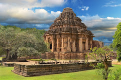

Agra Fort
The Agra Fort is a historical fort in the city of Agra in India also known as the Red Fort. Built by the Mughal emperor Akbar in 1565 and completed in 1573, it served as the main residence of the rulers of the Mughal Dynasty until 1638, when the capital was shifted from Agra to Delhi.
For More Information "Click Here"

Golden Temple
The Golden Temple (also known as the Harmandir Sahib, lit.abode of God', Punjabi , or the Darbār Sahib, 'exalted court', is a gurdwara located in the city of Amritsar, Punjab, India.[3][4] It is the preeminent spiritual site of Sikhism. It is one of the holiest sites in Sikhism, alongside the Gurdwara Darbar Sahib Kartarpur in Kartarpur, and Gurdwara Janam Asthan in Nankana Sahib
For More Information Click Here

Red Fort
The Red Fort or Lal Qila is a historic fort in Old Delhi, Delhi in India that served as the main residence of the Mughal Emperors. Emperor Shah Jahan commissioned construction of the Red Fort on 12 May 1638, when he decided to shift his capital from Agra to Delhi. Originally red and white, its design is credited to architect Ustad Ahmad Lahori, who also constructed the Taj Mahal.
For More Information Click Here

Hawa Mahal
The Hawa Mahal is a palace in the city of Jaipur, India. Built from red and pink sandstone, it is on the edge of the City Palace, Jaipur, and extends to the Zenana, or women's chambers.
The structure was built in 1799 by the Maharaja Sawai Pratap Singh, grandson of Maharaja Sawai Jai Singh, the founder of the city of Jaipur, India.[1] He was so inspired by the unique structure of Khetri Mahal that he built this grand and historical palace.
For More Information Click Here

Taj Mahal
The Taj Mahal is an Islamic ivory-white marble mausoleum on the right bank of the river Yamuna in the Indian city of Agra. It was commissioned in 1631 by the Mughal emperor Shah Jahan to house the tomb of his favourite wife, Mumtaz Mahal; it also houses the tomb of Shah Jahan himself. The tomb is the centrepiece of a 17-hectare (42-acre) complex, which includes a mosque and a guest house, and is set in formal gardens bounded on three sides by a crenellated wall.
For More Information Click Here

Sun Temple
Konark Sun Temple is a 13th-century CE (year 1250) Sun temple at Konark about 35 kilometres (22 mi) northeast from Puri city on the coastline in Puri district, Odisha, India. The temple is attributed to king Narasimhadeva I of the Eastern Ganga dynasty about 1250 CE
For More Information Click Here

India Gate
The India Gate (formerly known as the All India War Memorial) is a war memorial located near the Rajpath on the eastern edge of the "ceremonial axis" of New Delhi, formerly called duty path. It stands as a memorial to 84,000 soldiers of the British Indian Army who died between 1914 and 1921 in the First World War, in France, Flanders, Mesopotamia, Persia, East Africa, Gallipoli and elsewhere in the Near and the Far East, and the Third Anglo-Afghan War.
For More Information Click Here

Jallianwala Bagh
The Jallianwala Bagh massacre, also known as the Amritsar massacre, took place on 13 April 1919. A large peaceful crowd had gathered at the Jallianwala Bagh in Amritsar, Punjab, to protest against the Rowlatt Act and arrest of pro-independence activists Saifuddin Kitchlew and Satyapal. In response to the public gathering, the temporary Brigadier general, R. E. H. Dyer, surrounded the protesters with his Gurkha, Baloch, Rajput and Sikh troops from 2-9th Gurkhas, the 54th Sikhs and the 59th Scinde Rifles of British Indian Army.
For More Information Click Here